2 Points and Radius
Toolbar / Icon:

Menu:
Draw - Circle - 2 Points and Radius
Shortcut:
C, D
Commands:
circleradius | cd
Description:
Draws a circle from two points on the circle line and a radius.
Procedure:
Type the radius into the options tool bar.
Specify the first point on the circle line.
Specify the second point on the circle line.
 


